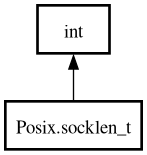

Posix.socklen_t – posix Reference Manual
socklen_t
Object Hierarchy:

Description:
[
CCode
( cname =
"socklen_t"
, default_value =
"0"
, has_type_id =
false
) ]
public
struct
socklen_t
:
int
Namespace:
Posix
Package:
posix
Inherited Members:
All known members inherited from struct int
MAX
MIN
abs
clamp
from_big_endian
from_little_endian
from_pointer
max
min
parse
to_big_endian
to_little_endian
to_pointer
to_string
try_parse